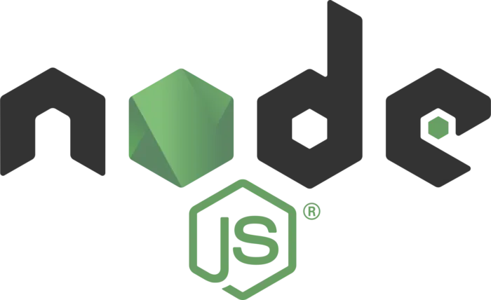
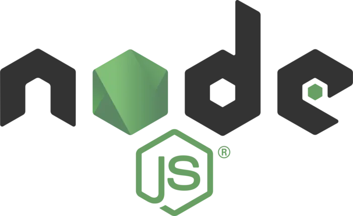
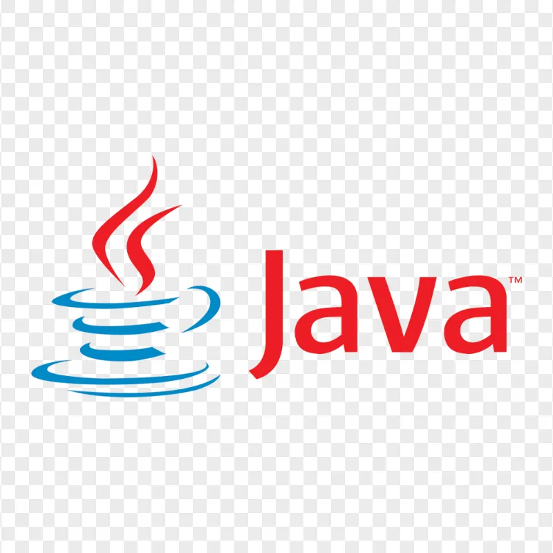
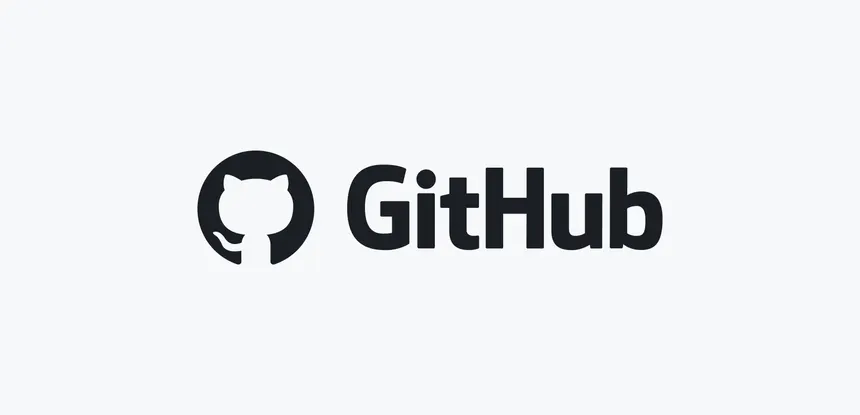
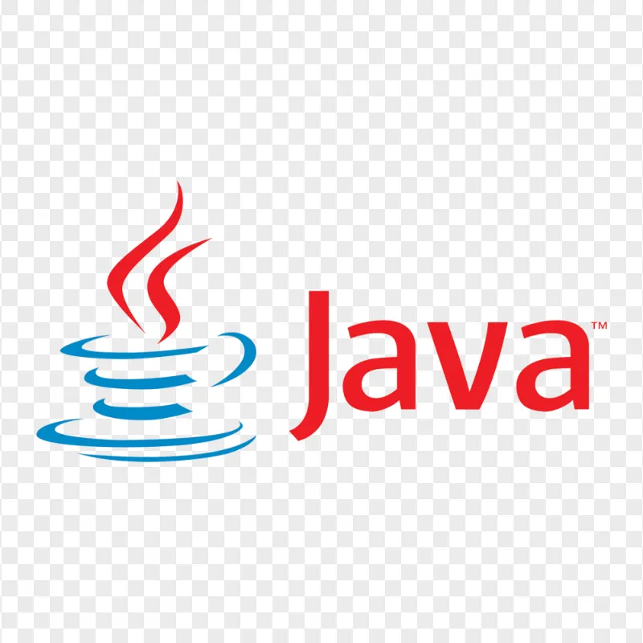
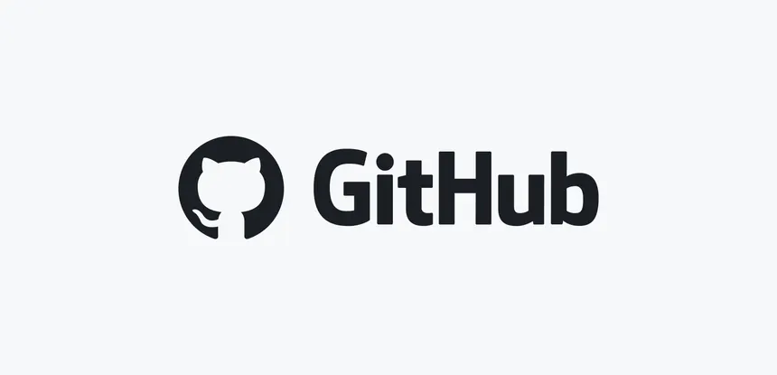

A bit about me
I am Riya Tyagi, a final year B.Tech student in Computer Science and Engineering at IIMT College of Engineering with a CGPA of 7.65.
A proficient MERN stack developer with a strong foundation in MongoDB, Express.js, React.js, and Node.js, along with expertise in HTML5, CSS3, JavaScript, and Tailwind CSS.
I have developed impactful projects like "ResumeSpark", a resume-building application that secured first place in the Intervarsity Website Design Competition,
"Shoppify", a full-stack e-commerce platform, and "BookView", a dynamic MERN-based book review application.
I have completed internships as a Web Development Intern at Prodigy InfoTech and as a Frontend Web Developer at Orinson Technologies.
With a passion for solving problems, I have solved 1000+ DSA problems on GeeksforGeeks and LeetCode.
Driven by attention to detail and a problem-solving mindset, I aim to become a versatile software developer by continuously enhancing my technical skills and contributing to impactful projects.


 



 


